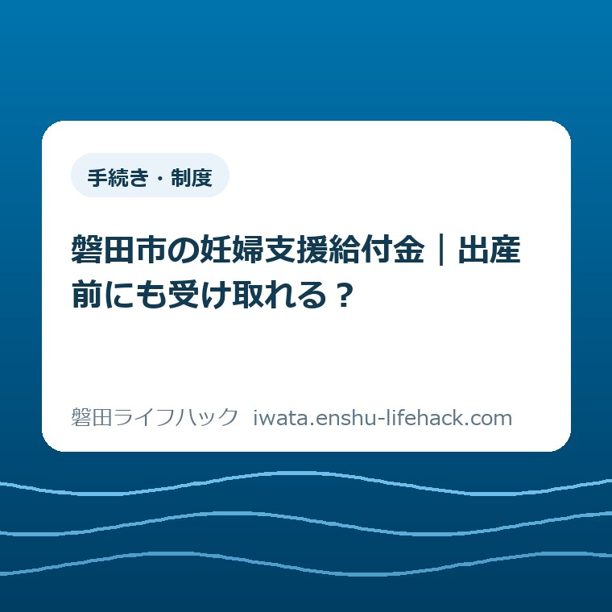

手続き・制度
磐田市の妊婦支援給付金｜出産前にも受け取れる？

この記事の要点
Q. 出産準備の買い物に間に合うよう、出産前にも受け取れますか？
A. 住所などの条件を満たせば、磐田市の妊婦支援給付金は2回目も妊娠32週から申請できます。市の案内では支給は届出受付日の翌月末です。出産前に受け取れる場合はありますが、申請日と出産時期によって変わります。届いた案内1枚で申請開始時期を確認し、実際の支払予定は市の通知で確かめてください。
通院と仕事の調整に、入金日の心配まで重なる
妊婦支援給付金の対象や手続きは、住所、妊娠の確認状況、転入などの個別条件で変わります。本記事は磐田市の一般的な流れを整理したものです。家族ごとの支給可否や振込日を確定するものではありません。
健診の予定を入れ、勤務先に時間の調整を頼み、家に帰って出産準備の品を調べる。妊娠中は、買い物の前にも段取りがあります。そこに「給付金はいつ入るのか」という確認が加われば、制度を読むための時間も負担になります。
ベビー用品の候補が決まっても、支払日が先に来るなら家計の組み方は変わります。金額だけを知って安心できないのは当然です。必要なのは、何万円もらえるかと同じくらい、何月の支出に使える見通しなのかという情報です。
大石浩之（磐田市／不動産業）です。私は、給付の話を家計の予定表に置き直して考えます。この記事では母子手帳の予約方法を繰り返すのではなく、申請できる時期と、口座に入る時期の違いに絞ります。
2回目は、出産を待たず妊娠32週から申請できる
磐田市の「妊婦のための支援給付制度」では、2回目の申請は妊娠32週を迎えた日から可能です。妊娠8か月頃に市から申請案内が届き、その案内に沿って胎児の数を届け出る流れです。2026年10月12日に市公式ページを確認しました。
「2回目だから出産後」と決めつけなくてよい点が、この制度で押さえたい事実です。出産した後の買い物だけを考えるのではなく、出産前の準備段階で申請の予定を立てられます。ただし、案内が届いた日と申請できる日は同じとは限りません。
市の説明には、妊娠8か月頃という案内の目安と、妊娠32週という申請開始の条件が並んでいます。封筒を受け取ったら即日申請できる、と読み替えないことです。案内の到着は、申請できる時期を確認するきっかけになります。
制度の開始は2025年4月です。2026年10月に新設・改正された制度として紹介しているわけではありません。市公式「iぽーと 出産・子育て安心事業」の概要にも、2025年4月から新制度へ移行したことが記載されています。
古い資料にある「出産安心ギフト」「子育て安心ギフト」と、現在の妊婦支援給付金を混ぜると、2回目の時期を取り違えます。旧制度の説明を見つけたときは、そのページの対象期間と、新制度への案内リンクを確認してください。

1回目の5万円と、2回目の胎児数×5万円
磐田市の給付額は、1回目が妊婦認定された妊婦に5万円、2回目が胎児の数に5万円を掛けた額です。胎児1人の場合は合計10万円、双胎の場合は合計15万円になります。2回とも同じ計算方法ではありません。
1回目は、妊娠届を提出するときに、妊婦給付認定と給付金の申請を併せて行います。その際に保健師との面談があります。市が受理後に内容を確認し、認定通知書兼支払通知書を送る手順です。
1回目の支給時期は、妊婦給付認定申請日の翌月末です。2回目は胎児の数の届出受付日の翌月末です。「翌月末」という言葉は共通ですが、何の日を基準にするかが違います。自分がどちらの手続きについて確認しているかを分けると、問い合わせもしやすくなります。
母子手帳の受け取りに合わせた勤務調整は、磐田市の母子手帳予約と仕事を休む前の準備で扱っています。予約を入れたことと給付申請を済ませたことは、予定表でも別の記録にしておくと安心です。
私は、合計額を一つの入金として家計に書かないほうがよいと考えます。胎児1人の合計10万円でも、1回目と2回目にはそれぞれ手続きがあります。買い物の予算欄には合計額、入金予定欄には回ごとの金額を書く。その区別が、使えるお金の見誤りを減らします。
「翌月末」を、出産準備の支払日と並べてみる
2回目の届出が2026年10月に受け付けられた場合、市の案内に沿った支給時期の目安は2026年11月末です。11月受付なら12月末になります。以下は月の関係を理解するための例で、個人の振込日を約束するものではありません。
たとえば、10月中に2回目の届出が受け付けられ、出産準備品の支払いも10月中にあるとします。11月末の給付をそのまま10月の支払いに使うことはできません。支給対象であることと、支払日に口座残高が足りることは、別々に確かめる必要があります。
一方、買い物の支払時期を11月末以降にできる場合でも、先に実際の入金を確認するほうが見通しは確かです。出産の時期や必要な品は家庭ごとに違います。給付を待つために必要な準備を一律に遅らせる、という意味ではありません。
「出産前にも受け取れる？」への答えは、受け取れる場合がある、です。32週から申請できても、出産が先になる場合はあります。私は、出産前の入金が必ず間に合うという前提で買い物を勧めることはできません。
月末近くに手続きする場合は、提出した日だけで翌月の入金を決めつけないようにします。2回目について市が示す基準は届出受付日です。受付状況が分からなければ、届出の控えや手元の案内を見ながら市に確認すると、話の行き違いを減らせます。
市は受理後に内容を確認して支払通知書を送ると説明しています。この記事では、通知が何日で届くかや、個別の振込処理日までは分かりません。そこを想像で補わず、市から届く通知を家計の予定を確かめる材料にしてください。

住所や口座、転入の条件で迷うとき
磐田市の対象者の説明では、申請時に市内に住所があり、産科医療機関で胎児心拍を確認していることなどが示されています。妊娠しているという情報だけで、このブログから対象を確定することはできません。
振込先は申請者である妊婦本人の口座に限られます。生活費をパートナー名義の口座にまとめている家庭でも、給付の受取口座とは分けて考えます。家族が準備を手伝う場合は、本人が確認できる状態で案内を一緒に読むとよいと思います。
他市町村から転入し、給付を受けていない方については、新たな認定申請や胎児数の届出が必要と市は案内しています。転入手続き後、母子手帳と本人の口座情報が分かる書類を持ち、こども若者家庭センターへ来所する流れです。
引っ越し前の自治体でどこまで手続きしたかが曖昧なら、申請の控えや支払通知を手元に集めて確認します。すでに受け取った回、まだ申請していない回を分けて伝えるためです。転入したから同じ回をもう一度受け取れる、とは考えないでください。
市の案内は、流産・死産等の場合も支給対象になるとしています。医療機関での胎児心拍の確認などの条件があり、通常の流れとは別の申請案内があります。つらい状況で出産後まで待つ必要があると思い込まず、公式ページの該当欄から確認できます。
申請期限は、権利を行使できる時を起算日として2年です。市は起算日を手続きごとに示しています。1回目は胎児心拍の確認日、胎児数の届出は出産予定日の8週間前の日です。流産等の場合にも別の起算日があるため、自分の期限は市に確かめてください。
「2年ある」ことと「出産準備の支払いに間に合う」ことは別です。期限内に申請するという問題と、何月の家計に入金を見込むかという問題を分ければ、急ぐ必要のある確認も見えます。手続き全体を探す場合は、妊娠・出産の手続きガイドも入口になります。
良い点——出産前の準備に、給付の予定を置ける
私は、2回目を出産前から申請できることを、家計の予定が立てやすくなる点で評価します。出産後にすべての手続きを寄せず、妊娠中に案内を読めるのは助けになります。買い物だけでなく、誰が書類を確認するかを家族で話す時期も作れます。
支給時期が翌月末と示されている点も、家計に置き換えやすいと感じます。受付月が分かれば、少なくとも当月の買い物に充てるお金とは区別できます。私は、制度のよさを金額だけで測りません。支払いまでの時間を読めることにも実利があります。
妊娠届の提出時に面談と1回目の申請を併せて行う流れも、予定を組むうえで助けになります。私は、通院とは別に役所へ動く負担があることを前提に読みたいと思います。相談の機会と申請の機会がつながっている意味は、家族の移動や勤務調整にもあります。
注文したい点——案内日と入金日を一目で分けたい
私は、妊婦支援給付金の案内を読むとき、案内の発送時期、申請できる時期、支給時期の3つが横に並んでいると助かると考えます。制度の言葉を読めるかどうかで、忙しい家庭の準備に差が出てほしくありません。
注文したいのは、妊娠8か月頃という案内と32週という条件の違いが、家計の予定にも伝わる見せ方です。市の説明には必要な時期が書かれています。私はその数字を探して結び付ける手間を、もう少し減らせると感じます。この記事の図は、そのために別々の箱で示しました。
申請が終わった人にも「申請済みだから買って大丈夫」と思わせない説明が必要だと考えます。家計には支払いの締切があり、給付には受付と確認の過程があります。どちらかを省いて安心だけを伝えると、入金を待つ間の負担が見えなくなります。
対案・結論——今日は届いた案内を1枚確認する
妊婦支援給付金について今日行うことは、届いている市の案内を1枚取り出し、申請開始時期の欄を確認することです。買い物リストも家計表も、全部を今日完成させる必要はありません。まだ案内が届く時期でなければ、市公式ページの同じ欄を確認するところまでで十分です。
案内が1回目の認定に関するものか、2回目の胎児数の届出に関するものかを見れば、次に確かめる日が定まります。2回目なら32週からの申請案内かどうかを読む。既に届出をした人なら、支払通知の内容を見る。自分の段階に合う1枚を選ぶのが先です。
家族に手伝ってもらうなら、私は「給付金を調べて」より「この案内の申請開始時期を一緒に見て」と頼む形を勧めます。制度全体を最初から読み直す役割を増やさず、同じ紙の同じ欄を共有できます。妊婦本人に説明し直す負担を集中させないためです。
次に余裕ができた日に、用品の支払日と入金予定を別の行に書けば十分です。現金払いか、カードの引落しかによって、実際に残高が必要な日は変わります。購入日だけを並べず、口座からお金が出る日を見るのが私の勧めです。
出産後の家計まで整理するときは、児童手当の金額と振込の考え方も別に確認できます。妊婦支援給付金の申請時期を、児童手当の支給日や申請と同じものとして扱わないようにしてください。
大石の視点——家計に必要なのは総額より支払える日
私は、制度を紹介するなら、金額を知らせるだけで終えたくありません。5万円の給付があっても、必要な支払いがその前に来れば、その間のお金を家族が用意します。制度の説明からこぼれやすいのは、まさにその期間の負担です。
私なら、出産準備の予定表を考える場面で、まず家賃などの動かせない支払いを置きます。その隣に給付の入金見通しを書き、用品を買う日を考えます。これは私の意見であり、実際の妊婦の方から受けた相談を再現した話ではありません。金額より先に日付を置くことで、待てる買い物と、先に費用を用意する買い物を分けたいのです。
ただ、私は「入金まで待てばよい」と言い切ることにも迷います。体調や出産の時期によって、準備できる日は限られるからです。支給を待つことが楽になる家庭もあれば、先に準備を終えたほうが負担を減らせる家庭もあります。買う時期の正解を、給付の予定だけで決めないでください。
ここは言い切れます。申請できる日と、使えるお金になる日は違います。今日確認する1枚の案内で、その区別がつけば前進です。全部の手続きを一度に抱え込まず、今の自分に関係する日付を一つ確かめることから始められます。
妊婦支援給付金の時期でよくある質問
2回目は出産後まで申請できないのですか？
磐田市では、2回目は妊娠32週を迎えた日から申請できます。市は妊娠8か月頃に案内を送り、胎児の数の届出を受け付けます。支給は届出受付日の翌月末です。出産前に申請できても、出産前の入金が必ず間に合うとは限りません。住所などの条件や自分の申請時期は、届いた案内と市公式ページで確認してください。
10月に申請すれば、10月の買い物に使えますか？
2回目の届出が2026年10月に受け付けられた場合、市の案内に沿った支給時期の目安は11月末です。10月中の支払いに使える前提では予定を組めません。届出を送った日と受付状況を分け、支払通知で見通しを確かめてください。個別の振込日はこの記事では確定できないため、不明な場合は市に確認します。
家族名義の口座で受け取れますか？
磐田市の案内では、給付金の振込先は申請者である妊婦本人の口座に限られ、妊婦以外の方の口座は使えません。生活費を家族名義の口座で管理している場合も、給付の受取口座とは分けて確認してください。転入や申請途中などの個別事情があるときは、手元の案内を用意して市の担当窓口へ確認してください。
参考にした公式情報
- 妊婦のための支援給付制度／磐田市（2026年3月30日更新、2026年10月12日確認）
- iぽーと 出産・子育て安心事業／磐田市（2025年12月26日更新、2026年10月12日確認。制度移行の概要を参照）
最終確認日：2026-10-12。本記事は公表情報と大石浩之の意見を分けて記載しています。制度・金額・日程は変更される場合があります。支給可否や申請期限、振込時期は個別条件で変わるため、最後は必ず磐田市公式ページと市の担当窓口で確認してください。

大石浩之／磐田市／不動産業・宅地建物取引士。著者プロフィール